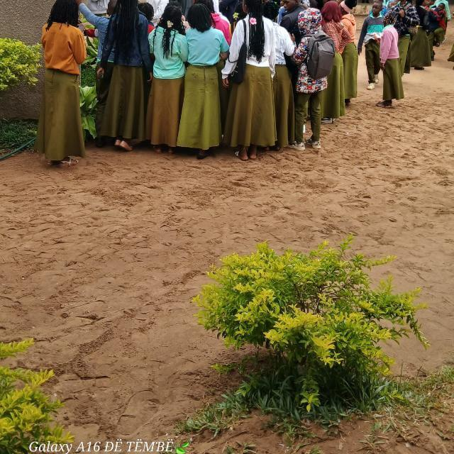
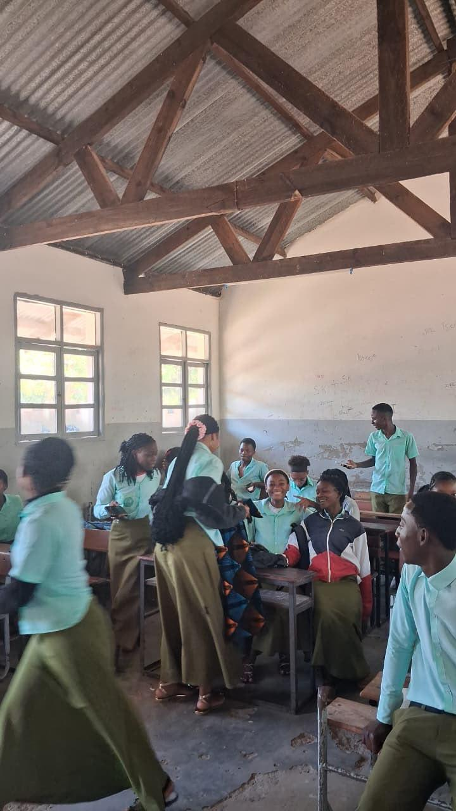

Formas comuns de corrupção e suborno na escola
No contexto escolar, a corrupção e o suborno podem manifestar-se de várias formas: pagamento de dinheiro ou ofertas em troca de notas, aprovação de exames ou lugares preferenciais; falsificação de documentos; uso de influências para obter vantagens; venda de exames ou trabalhos; e favoritismo injusto.
Principais Causas
- Falta de valores éticos: fraca formação em integridade e responsabilidade.
- Pressão por resultados: alunos e famílias que valorizam mais a nota do que a aprendizagem.
- Baixa supervisão e impunidade: ausência de mecanismos de controlo e de sanções efectivas.
- Dificuldades económicas: situações de necessidade que levam a práticas indevidas.
- Normalização cultural: quando a corrupção é vista como “normal” ou “inevitável”.
- Falta de transparência: processos pouco claros de avaliação e gestão.
Consequências e Impacto
- Para os alunos: desvalorização do esforço, perda de motivação, desigualdade de oportunidades.
- Para a escola: perda de credibilidade, queda da qualidade do ensino, clima de desconfiança.
- Para a sociedade: formação de cidadãos menos honestos, perpetuação de práticas corruptas no futuro.
- Para o sistema educativo: enfraquecimento do mérito e da justiça, prejuízo ao desenvolvimento do país.

A escola deve promover igualdade de oportunidades e respeito pelas regras
Impacto na vida escolar
Quando a corrupção e o suborno se instalam, os alunos que estudam honestamente sentem-se desmotivados. A confiança entre alunos e professores diminui. A escola deixa de ser um espaço de formação de carácter e passa a ser vista apenas como um meio de obter certificados. Por isso, combater estas práticas é fundamental para preservar o valor da educação.

Um ambiente escolar saudável baseia-se na confiança, no respeito e na honestidade